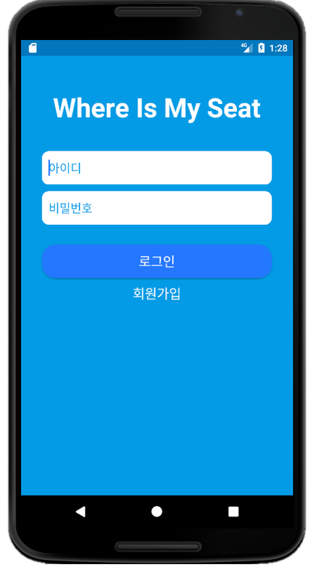
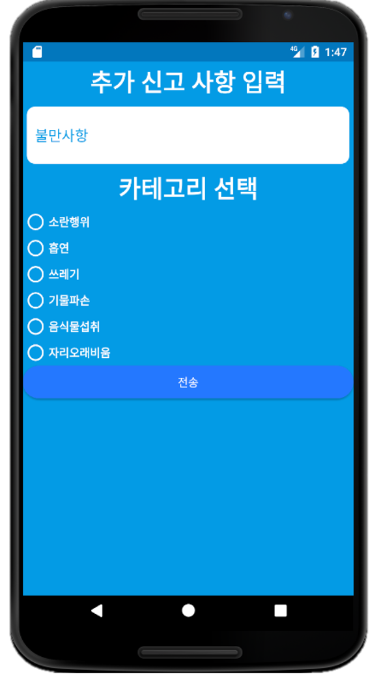

<예시 화면>


1. 개요
Where is My Seat (WMS) is a Mobile Application Project at 'Domain Analysis and Design' class.
It progressed on object oriented analysis and RUP development methodology. Also, It use Incremental
and elaborative development.
First, We make inception of WMS. We created the need for development,
and we did market research. Then, We assigned the user and non-user. It used at the requirement
analysis. Second, We did Ilaboration 1 phase. According to requirement, Domain model and Sequence
Diagram. Lastly, We did Ilaboration 2 phase. At that time, We apply GRASP and GOF pattern. When it
is over, we start deployment.
We deploy thought 'Android Studio'. Once logged into the application, you set your location.
WMS exposure to nearby libraries. User can check remain seat of libraries and select the seat. And,
user go to the there, and just use it. If the user see the bad user, they can report bad user using
the app. Report make penalty score and it records to expulsion.
2. 담당 역할
- 요구사항 분석
- Use Case 작성
- 도서관 좌석 예약 기능 개발
- 사용자 정보 DB 구축 (MySQL)
3. 주요 기능
- 사용자 로그인
- 도서관 좌석 실시간 관리
- 사용자 신고 기능
- 불량 사용자 및 퇴출 기능
4. 관련 자료